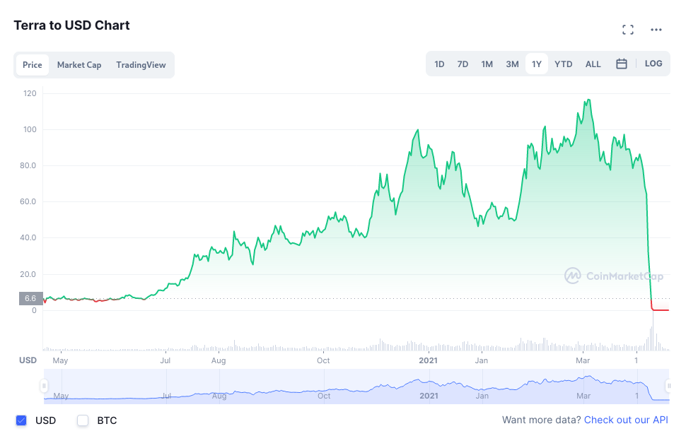
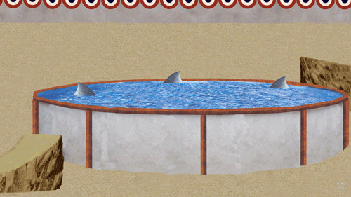

Why are we calling cryptocurrencies crypto coins and not just private coins? Currently this space as a whole is suffering big. Coins that once where trusted are now suffering. The entire scene is just deflating because after ten years there has not been a real purpose for this technology and now we are getting the consequences of this.

Figure 1: Red line goes down.
Every startup in this space once championed decentralization but now gets the answers of not being able to change their smart-contracts (MONO) with millions just disappearing. We get stablecoins (LUNA) that just crash and burn or bank heists that are just dumb in scale (AXS).
So, why are we still trying to make crypto happen? I do not have the answer, and people have been trying really hard to find this golden land (and I actually hope they find it). But in the mean time we can look from another angle and get some interesting results.
First of all, why not just admit what part of this space actually is? A place where private coins actually are normalized. We get public coins in the sense of government backed currency and we get private coins in the sense of company backed currency (this is not just in the cryptospace).
I think we can catalog most of the companies in the crypto scene in this part. Yes, we still have foundations (ETH), but let's be real, they are not the majority. Every one wants to make millions and tends to make matters centralized because it's convenient.

Figure 2: The guys from Axie after creating their own chain and getting hacked for 600M dollars.
Just by admitting that you are a private coin and not that decentralized. You solve a lot of the problems that tend to happen. Yes, you do not get the benefits, but you can actually do refunds and rollback millionaire bugs. And the best part of all of this, we actually have some private coins that are currently working.
Can we just talk about the fact that airlines have private coins but they just call them points or miles? Or what about this thing that everyone hates inside of video games that is just passing money to power points or gold coins, or jewels, etc. Or even casinos with stablecoins that are just called chips.
I do not think that this is a solution, but by looking at this scene from another point of view crypto as a place where companies just try to make money makes a lot of things fall into place.